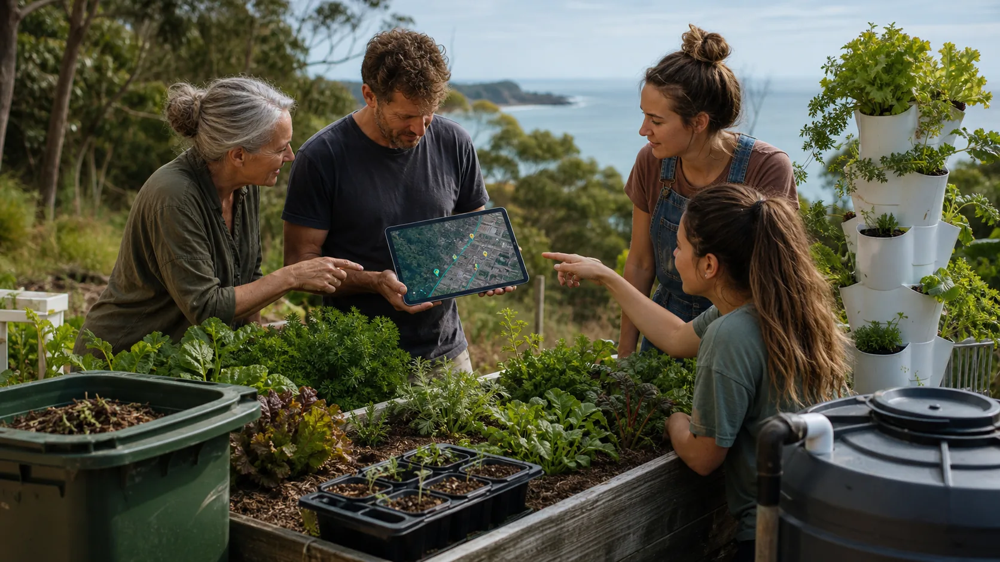

Observe
What food, space, tools and risks exist this week?
Sovereign Space Builder bridge
The Space Builder idea becomes useful here as a simple local digital twin: gardens, kitchens, compost, storage, safety zones, tasks and evidence.

Photorealistic editorial website section image for Sovereign Space Builder as a community digital twin for gardens, kitchens and shared tables. Scene: an outdoor island garden bed and small hydroponic tower with a tablet showing abstract map layers and place markers with no readable text, people pointing between the real plants and the device. Include compost bin, water container, seed tray, and subtle coastline background. Communicates map, observe, simulate, do, share. Realistic, practical, hopeful, Australian coastal vegetation. No logos, no readable text, no QR codes, no sci-fi holograms. 16:9 landscape, high detail.
From system spec to local trial
The full Sovereign Space Builder brief includes CRDTs, digital twins, DIDs, mesh networks, simulations, robotics and planetary commons. The Shared Table only needs the first grounded slice: observe, map, check, act and learn.
What food, space, tools and risks exist this week?
What small action can safely turn surplus into value?
What can be published as public-safe learning after the trial?